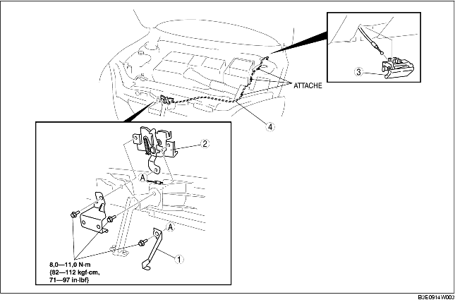

1. Pour déposer le câble de déblocage de capot, retirer les pièces suivantes :
2. Déposer les différents éléments selon l'ordre indiqué dans le tableau.
3. Pour la repose, suivre l'ordre inverse de la dépose.
4. Régler le capot. (voir la section REGLAGE DE CAPOT.)

.
|
1
|
Levier (5HB)
|
|
2
|
Serrure de capot
|
|
3
|
Levier de déblocage de capot
(voir la section Note sur la dépose de levier de déblocage de capot.)
|
|
4
|
Câble de déblocage de capot
|
1. Tirer le levier.
2. Tout en poussant la languette dans le sens indiqué par la flèche à l'aide d'un petit tournevis à tête plate protégé par une bande adhésive, le dégager du panneau inférieur.
3. Dans les condition énoncées à l'étape 2, tirer le levier de verrouillage du capot vers l'extérieur puis déposer le du panneau inférieur.